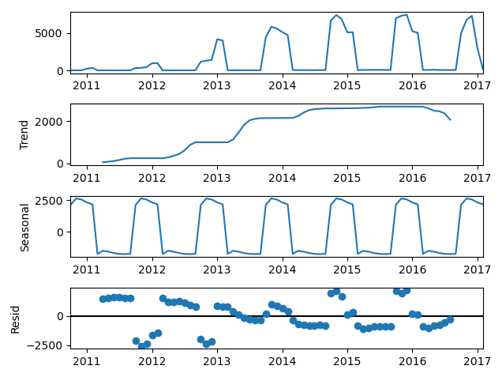
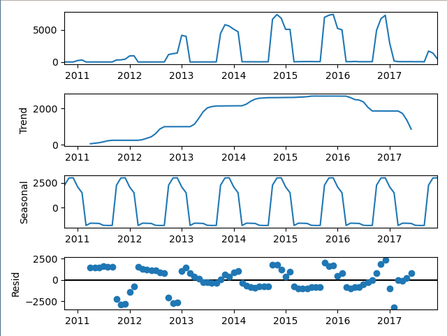
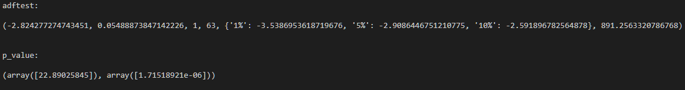
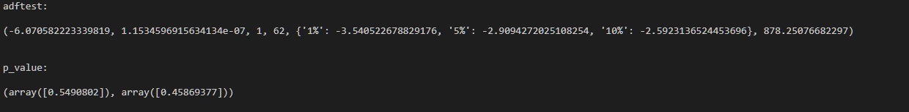
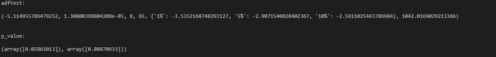
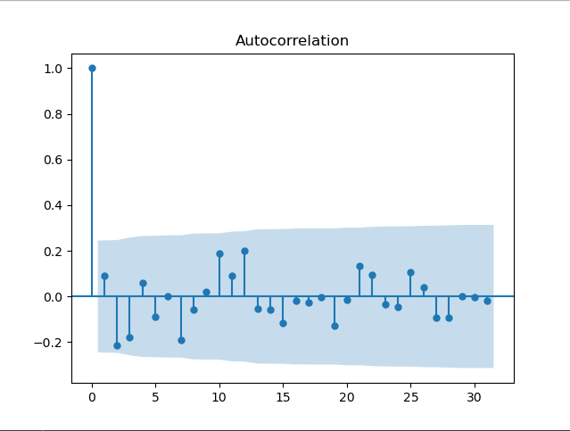
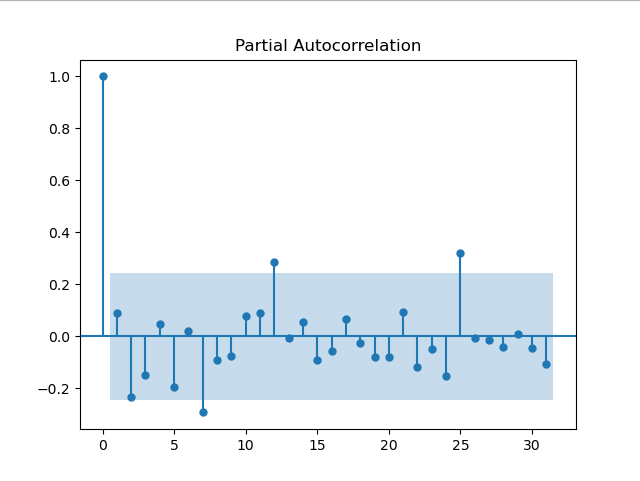
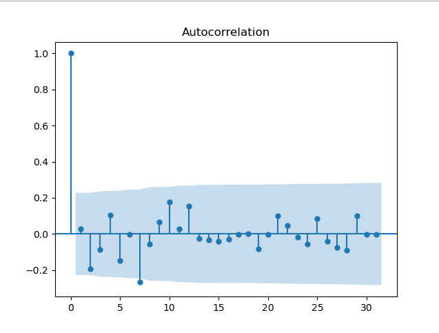
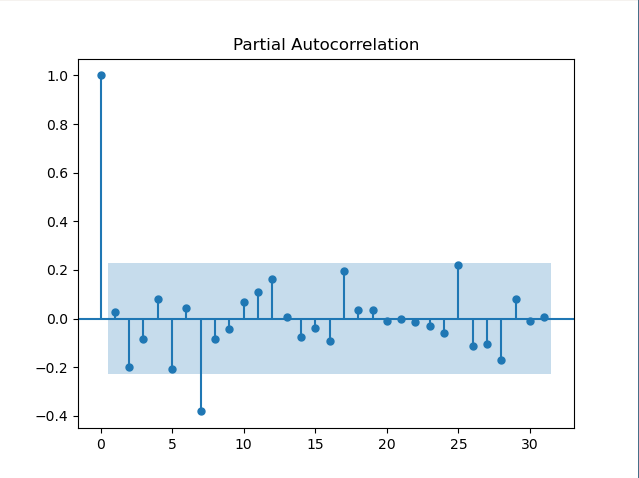

全国酒驾数据展示
这是个人在北京理工大学软件工程数据挖掘2020课程上的大作业。主题是对给定数据集中的数据进行信息挖掘和展示，展示效果主要为数据统计和地域分布。其中数据集来自法研杯的危险驾驶数据集，数据集收录的截止时间约为2017年。其中的数据有罪名、刑期、刑法条例、犯罪人姓名（隐匿）、罚款数和审判文书。
总述
在人们的生活水平日渐提高的同时，全国的汽车数量也在不断增长，随之而来的是各种交通问题的不断发生。比如，在2019年，对危险驾驶的起诉人数已经超过盗窃罪、诈骗罪和寻衅滋事罪，成为了年度起诉人数最多的罪行。
因此，我通过法研杯中的数据集，对危险驾驶中的酒驾进行了统计和可视化，以及一些简单的分析。
全国酒驾统计数
由于数据集是从所有案件的统计中截取的一部分数据，所以数据集中不仅仅只有危险驾驶的案例。所以首先要从数据集中提取出酒驾的案例。对此，我的提取方案为正则匹配。虽然对于很多任务类似任务而言，用神经网络做的抽取式文本摘要更有普适价值，效果也可能更好，但是鉴于司法文书的规范性较强，且数据集信息清晰，正则匹配的方法做出的效果也在接受范围之内。
正则匹配
相对于npm中抽取式文本摘要，正则匹配的弱处主要体现在提取特征上。正则匹配需要人工提取特征，这意味着其准确度和普适度都较弱。在酒驾这个特定任务中，重要的是准确度。而提高正则匹配的准确度，需要准确地找到自然语言中酒驾的特征。不同于其他自然语言，在司法文书中，酒驾的特征是较为明确的。首先是判决依据，酒驾的判决依据来自于对血液或者呼气中的酒精含量的检测值。所以在司法文书大多数都很规范的前提下，我们可以查找关键字“血液”、“乙醇”和“\100mg”等，通过这些关键字，再结合“133”这一刑法条例，可以从危险驾驶数据中较为准确地找到酒驾案例。
但仅仅有关键字，还不足以精确提取。在一篇司法文书中，可以在开头提到“血液”，在结尾提到“酒”，况且“\100mg”并不是每次都会出现，实际上，很多案例都是写的“\mg”、“\毫克”、“\ml”等等，所以，我们需要将关键字组合起来，以形成精确的关系。综上所述，我的方案是在危险驾驶案例下查找“血”以及在0-30个字符内匹配“\”。当然，正则表达式并不止这一个，这里只是解释思路。
有了正则匹配表达式还不够，还需要有效果的评估方法。对此，我采用的方法是在匹配到的酒驾段落查找酒精含量。在司法文书中，血液中的酒精含量都至少精确到一位小数，根据这个特征，加上正则表达式，能较为精确地找出血液酒精含量。由此可以查看那些被判断为酒驾却没有找到酒精含量的案例，以评估正则匹配效果，并进行改进。实际上上面的正则匹配表达式就是通过这个评估方法选择、迭代出的效果最好的方案。
数据统计
得到案例后，接下来是提取时间。虽然司法文书对于时间的记录较为规范，但是还是有部分的错误日期。为了规范化，可以将字符串转为python中的时间格式，并用try判断是否能提取date。最终提取的结果很好，获得的数据有333347个，而未获得的只有586个。
最难的部分在于时间的拟合上。司法文书中的时间有三个精确维度：年、月、日。其中年在333347份有效数据中占了243653份，月有24744份，而日为64860份。这就牵扯到一个关键问题了：面对不同精度间如此大的差距，应该如何表现数据。首先是可以将数据降维，将年月日都降为年。这样能保证数据的正确性，但是要看到所有的年份只有7个，这样的降维对于信息的损耗太大，不利于从中提取信息。若选则月为基准，年通过统计方法变为月份，日降为月，则保留了信息，也统一了维度。但是这样未免显得有些单调。而将所有数据分配到日上，则有面对如下问题：如何将年变为日。日比年的信息多了很多，而年的数量又远大于日。及时能将年变为日，也不利于预测，因为在日的维度上存在太多的0值，在做时间序列处理时很难拟合。最终我选择了展示两个图：一个是月份为基准的图，主要用来做预测。另一个是以日为基准的图，用来展示信息。
日为基准的图
以日为基准的图认为精确到日的数据是完全正确的。由此将年、月数据按比例化成日数据。虽然此数据有明显的正态分布，但我还是没有选择用正态分布来分布数据。因为对于日期，若一个日期中没有酒驾数据，则有如下两种可能的情况：1.在数据集的相应规模下，这一天的确没有酒驾事件；2.数据缺失。按照正态分布处理则为默认所有的0值都是第一种情况，这会使得数据过于偏向于日数据，或者叫“过拟合”日数据。为此，我先默认日数据存在缺失，并对日数据进行插值处理，此后再将年、月化为日。对于缺失值处理，我采用的是knn方法。可是由于此数据是一维的，插值的依据只有其自身，所以其本质是对相邻日数据取平均值插值。若使用正态分布将年月变成日，那么其分布会极为集中地分布在年末和年初三个月，而其他时刻则极少有数据，这与“全国数据”不相吻合。为了平衡这种现象，我选择用比例分布，但没有选择光滑，因为我无法判定哪种程度的光滑会 “符合现实”，由此干脆直接保留了数据的大部分特征。
数据分析
从数据中可以看出，在2011年酒驾入刑后，我国开始严查酒驾，从此酒驾案例飙升。从数据的日期分布中还能看出，酒驾案件完全集中在春节前后。对此可以有以下推测：首先，春节前后大家的应酬很多，而醉后坐公共交通工具或租车都不方便，由此酒驾案例上升。其次，春节是重大节日，是亲朋好友团聚的时刻，交警会重点在这时抓酒驾，为假期保驾护航。
月为基准的图
此图主要用于进行预测,且未使用年数据。实际上从上图就能看出，这个时间序列有着强烈的季节性，而极少有其他性质。一开始我是计划用日来做日期预测，但是由于数据极其集中，导致差分后空值太多，对预测结果不友好。因此我选择将日化为月，加上原始的月数据，来进行计算，这样的过程下空值会大大减少。此外，在预测过程中，要注意到数据集的时效性。此数据集截止于2018年初，但是截至时的数据并不一定是完整的，换言之，当数据集截至收集时，有的法院并没有将数据统计并上交上去，这会导致最后一年的数据比往年要少很多，实际上从上图即可看出这一现象。为此，我的预测的基础分为两个：以2016年及其之前为基础（以下检测2016）和 以2017年及其之前（以下简称2017）为基础，且都要预测至2020年4月。
季节性检验
虽然图像有明显的季节性，但是还是可以更直观地查看其性质。下图图像从上往下依次为原始数据、趋势图、季节性图、随机性图
这是2016数据，第二项有明显的规律性，季节性非常强。
同理，2017季节性也非常强。
平稳度和白噪声检验
检验后数据并不满足平稳度的要求，那么先对数据进行季节差分，差分后数据依然不满足平稳度的要求，结果如下，adftest第一项数据为adf结果，第二项为算得的数据不平稳的置信度。可以看到两个数据集都有一半以上的概率不平稳。数据如下图：
2016数据

2017数据
再做一次一阶差分。这里可以看到，虽然用knn和日化为月的方法减少了空值，但是该数据集依然不适合用ARIMA做时间序列分析。因为过不了白噪声检测。虽然在季节性差分和一阶差分后，两种预测的数据的平稳度能满足远小于1%拒绝原假设的统计值的要求，但是它们的统计量P值则非常糟糕，2016的数据为0.458，而2017的数据则达到了惊人的0.808，换言之这些数据几乎能被认定为白噪声了，只能说硬着头皮做了。。。
2016检验数据
2017检验数据
acf和pacf
对于acf和pacf图如何分析，可以搜索相关教程。这里我只是非常粗糙地使用其获得数据。
对于2016的数据，我们可以看出，pacf在延迟为12、24有明显的突起，而acf中没有相关突起，这暗示季节性AR(2)，而pacf在12，24之外还有2个突起，暗示非季节性AR(2)。 对acf图，只能看出一个突出，即暗示非季节性MA(1)。
对于2017的数据，同理可得非季节性AR(2)和非季节性MA(2)。
最终结果
数据分析
从预测来看，以2016年及其之前的数据为基础做的预测比2017年的效果要好，说明2017年末的数据很可能是不完整的，也就是数据集的收集过程中存在滞后性，导致结果不准确。另外要说的一点是，这里我没有将小于0的无意义预测值取0。若取0，则预测效果会显得更好，但是鉴于白噪声的检测很差，我认为还是保留原始预测结果比较好，因为这样能帮助找出预测模型的不足，从而方便日后的改进。
酒驾案件地域分布
预测酒驾案例的分布有地域的分布。因为从人文方面考虑，不同的地方有不同的文化，而酒文化也是中国的一个文化。
提取过程
地域数据的分类上，首先是按照年份进行划分，在此基础上进行地域划分。数据划分过程中，面对的主要问题包含以下方面：首先是对地点的提取，对此我的方法是下载中国行政区域文件，从中按照名称匹配。司法文书中对地点的引用较为规范，这对于提取较为有利。对于地点的提取，我采用的是分段提取。在查找到酒精含量的数据那一段进行正则匹配。这样能避免多罪并罚时提取到错误信息。但是这种方法还是难以应对同一段的多个地名。若存在多个地名，会对数据产生较大影响。实际上，这是正则匹配方法的弱点，采用正则匹配方法很难处理重复地名问题。而若再对段进行截取，则会使得能提取出的结果在所有案例中比例过少。而在多地名上，默认选择第一个地名作为结果。实际上在我观察过的部分案例中，正确地名出现的位置不确定。另一个会严重影响结果的因素是地名的简化和更改。我选取的行政规划表是2018年的，但是案例会从2010年持续到2018年，且还有很多简化了自治区等名称。这个问题不能通过匹配简化的地名解决，因为部分少数民族地区的地名简化后就是生活中的词。对此我只能通过设定行政编号为键的基础上重复部分地区名称。 即使如此还是存在部分地名没有被收录，这些数据与真正没有地名的数据混在一起，很难分开。最终，能提取到的数据有329315个，而无数据的有19901个。最终可视化展示如下：
数据分析
从数据中可以看出，沿海城市的酒驾数要比内陆城市多。这或许是由于经济发达地区的应酬比内陆地区多，也可能与地方交警的执法能力息息相关，而沿海城市的执法能力可能比内陆强，包括遍地的监控和执法力量。
酒驾的危害
酒驾对社会的危害无需我多言。而从数据集来看，主要分为刑期和罚款，结果如下：
| 年份 | 平均刑期/月 | 刑期众数/月 | 平均罚款/元 | 罚款众数/元 |
| 平均数据 | 2.61 | 2.0 | 7256.33 | 2000.0 |
| 2010 | 14.41 | 9.5 | 7979.16 | 0.0 |
| 2011 | 3.06 | 2.0 | 2277.74 | 2000 |
| 2012 | 2.79 | 2.0 | 7099.08 | 2000 |
| 2013 | 2.75 | 2.0 | 6736.65 | 2000 |
| 2014 | 2.65 | 2.0 | 6125.97 | 2000 |
| 2015 | 2.67 | 2.0 | 5170.69 | 2000 |
| 2016 | 2.58 | 2.0 | 5032.76 | 2000 |
| 2017 | 2.37 | 2.0 | 16862.9 | 2000 |
数据分析
显然在2011年以前，酒驾处罚的是严重违法的行为。其平均刑期达到了14.4个月，众数也有9.5个月。此后抓酒驾常规化，其平均刑期、平均罚款开始下降。此后平均罚款数较高，但众数一直为2000元，而刑期众数也一直是2.0个月。这说明对于酒驾的处罚一般为2个月刑期与2000元罚款，与此同时，平均罚款高于5000，远大于2000，说明交警对酒驾的区分度做了设置，能对严重威胁社会安全的酒驾加大处罚，而不是一视同仁，2000元了事。
相关性问题
对于酒驾与其他罪行的相关度，在计算后发现，酒驾与其他的罪行没有严格的相关性，实际上，相关性非常小。下图是截取的计算后的结果。其最小支持度和最小置信度都小于0.0001.